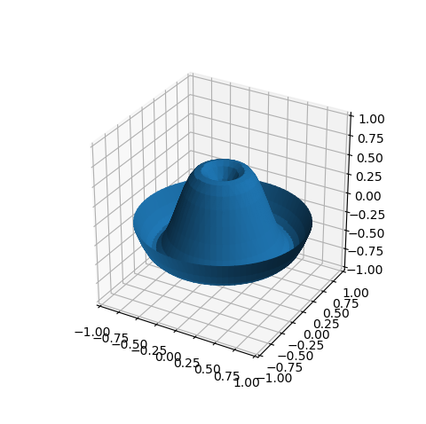
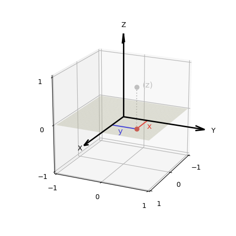
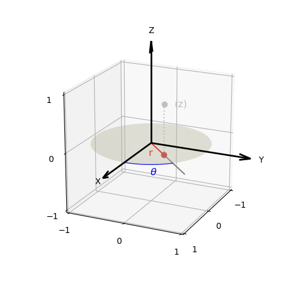
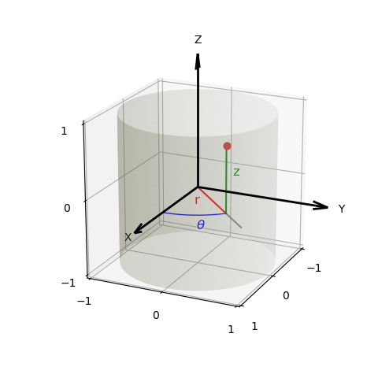
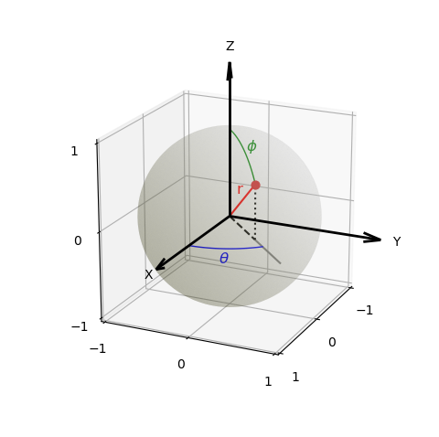
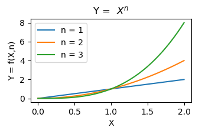
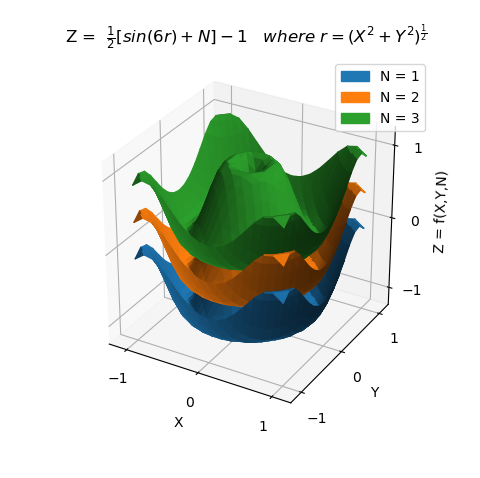

Coordinates and Functions¶
There are four basic surface classes, each with a native coordinate system. These surfaces provide a basic grid of points which can be mapped using functional, image or data methods.
Mapping for any surface is done in the respective native coordinates:
| Class | Native Coordinates | Geometric Shape |
|---|---|---|
| PlanarSurface | x,y,z | square plate |
| PolarSurface | r, θ, z | circular disk |
| CylindricalSurface | r, θ, z | cylinder |
| SphericalSurface | r, θ , φ | sphere |
Surfaces are normalized to be contained within an x,y,z cube, with center at the (0,0,0) and extending from -1 to 1 on each axis. Scaling can be performed either through the mapping methods or by a transform class method.
Note
The four surface classes are derived from the same base class and use the same mapping method names with the same arguments, only differing in the native coordinates which are used in function definitions.
Note
Arguments passed to user-defined functions and their return values are Numpy arrays.
Function Coordinates¶
In the previous tutorial, the example surface was of type PlanarSurface. As a result, the function used to define the surface geometry used x,y,z Cartesian coordinates. The return value of that function was a point in the same coordinates. This function was:
def planarfunc(xyz) :
x,y,z = xyz
r = np.sqrt( x**2 + y**2)
Z = np.sin( 6.0*r )/2
return x,y,Z
To use polar coordinates, a PolarSurface object is used with a function defined in polar coordinates as:
1 2 3 4 5 6 7 8 9 10 11 12 13 14 15 16 17 18 19 20 21 22 23 24 25 26 | import numpy as np
import matplotlib.pyplot as plt
import s3dlib.surface as s3d
# 1. Define function to examine ....................................
def polarfunc(rtz) :
r,t,z = rtz
z = np.sin( 6.0*r )/2
return r,t,z
# 2. Setup and map surface .........................................
surface = s3d.PolarSurface(4)
surface.map_geom_from_op( polarfunc )
surface.shade()
# 3. Construct figure, add surface, and plot ......................
fig = plt.figure(figsize=plt.figaspect(1))
ax = plt.axes(projection='3d')
ax.set(xlim=(-1,1), ylim=(-1,1), zlim=(-1,1))
ax.add_collection3d(surface)
plt.show()
|
The only changes from the previous example is the use of a PolarSurface, line 14, and to use the polarfunc function for the mapping operation, line 15. The resulting plot is:
Planar¶
The coordinate system for the PlanarSurface object is shown below. The initial surface coordinates before mapping all have z=0.
For a PlanarSurface, the geometric mapping function will have the form:
# planar function
def foobar(xyz) :
x,y,z = xyz
# arg value passed is z = 0
# define function here: X,Y,Z = f(x,y)
return X,Y,Z
Polar¶
The coordinate system for the PolarSurface object is shown below. The initial surface coordinates before mapping all have z=0 with the radial coordinate domain 0 ≤ r ≤ 1.
For a PolarSurface, the geometric mapping function will have the form:
# polar coordinate function
def foobar(rtz) :
r,t,z = rtz
# arg value passed is z = 0
# define function here: R,T,Z = f(r,t)
return R,T,Z
Cylindrical¶
The coordinate system for the CylindricalSurface object is shown below. The initial surface coordinates before mapping all have r = 1 with the angular coordinate domain 0 ≤ θ < 2π and the vertical domain 0 ≤ z ≤ 1.
For a CylindricalSurface, the geometric mapping function will have the form:
# cylindrical coordinate function
def foobar(rtz) :
r,t,z = rtz
# arg value passed is r = 1
# define function here: R,T,Z = f(t,z)
return R,T,Z
Spherical¶
The coordinate system for the SphericalSurface object is shown below. The initial surface coordinates before mapping all have r = 1 with the angular coordinate domain 0 ≤ θ < 2π and the vertical domain 0 ≤ φ ≤ π.
For a SphericalSurface, the geometric mapping function will have the form:
# spherical coordinate function
def foobar(rtp) :
r,t,p = rtp
# arg value passed is r = 1
# define function here: R,T,P = f(t,p)
return R,T,P
Parametric Functions¶
To exemplify plotting parametric functions, first consider a 2D line plot of a simple power function based on the Simple Plot example from matplotlib.
Write the script in a three step process: define the function, create the ‘pseudo’ line objects, ‘add’ the lines to the plot axis.
import matplotlib.pyplot as plt
import numpy as np
# 1. Define function to examine ...............
def f(x,n) :
y = x**n
return y
# 2. Setup and map line .......................
x = np.linspace(0, 2, 100)
y1 = f(x,1)
y2 = f(x,2)
y3 = f(x,3)
# 3. Construct figure, add line, and plot .....
plt.xlabel('X')
plt.ylabel('Y = f(X,n)')
plt.title(r'Y = $\ X^n$')
plt.plot(x, y1, label='n = 1')
plt.plot(x, y2, label='n = 2')
plt.plot(x, y3, label='n = 3')
plt.legend()
plt.show()
For 3D surfaces, use an analogous function definition: the first argument is a coordinate location, the second argument is the function parameter.
# function with arg parameter
def foobar(abc,arg) :
a,b,c = abc
# define function, dependent on surface class, here:
# planar/polar: A,B,C = f(a,b,arg)
# cylindrical/spherical: A,B,C = f(b,c,arg)
return A,B,C
So, to plot a parametric function of the previous 3D example using the three step process:
import numpy as np
import matplotlib.pyplot as plt
import matplotlib.patches as mpatches
import s3dlib.surface as s3d
# 1. Define function to examine ....................................
def planarfunc(xyz,N) :
x,y,z = xyz
r = np.sqrt( x**2 + y**2)
Z = ( np.sin(6*r) + N )/2 - 1
return x,y,Z
# 2. Setup and map surface .........................................
y1 = s3d.PlanarSurface(4, color='C0' )
y1.map_geom_from_op( lambda xyz : planarfunc(xyz, 1) ).shade()
y2 = s3d.PlanarSurface(4, color='C1' )
y2.map_geom_from_op( lambda xyz : planarfunc(xyz, 2) ).shade()
y3 = s3d.PlanarSurface(4, color='C2')
y3.map_geom_from_op( lambda xyz : planarfunc(xyz, 3) ).shade()
# 3. Construct figure, add surface, and plot ......................
fig = plt.figure(figsize=plt.figaspect(1))
ax = plt.axes(projection='3d')
minmax, ticks = (-1.2,1.2), [-1,0,1]
ax.set(xlim=minmax, ylim=minmax, zlim=minmax)
ax.set_xticks( ticks )
ax.set_yticks( ticks )
ax.set_zticks( ticks )
ax.set_xlabel('X')
ax.set_ylabel('Y')
ax.set_zlabel('Z = f(X,Y,N)')
ax.set_title( r'Z = $\frac{1}{2} [ sin(6r) + N ] - 1 $'+
r' $\mathit{where}\ r = \left( X^2 + Y^2 \right)^\frac{1}{2} $'+'\n\n' )
C0_patch = mpatches.Patch(color='C0', label='N = 1')
C1_patch = mpatches.Patch(color='C1', label='N = 2')
C2_patch = mpatches.Patch(color='C2', label='N = 3')
ax.legend(handles=[C0_patch,C1_patch,C2_patch])
ax.add_collection3d( y1 + y2 + y3 )
plt.show()
Which produces:
This example demonstrates the object-oriented approach to 3D surface plotting. In Matplotlib, the axis is an object. With S3Dlib, surfaces are also considered objects and can be operated on separately from the axis object. In this example, one surface object was created from three surface objects through simple addition. Then, that single surface object was added to the axis object.
This method of using a parametric function is demonstrated in numerous Examples. The Parametric Set of Surfaces example uses multiple surfaces on a single 3D axis. The Parametric Set example plots each surface on an individual 3D axis.